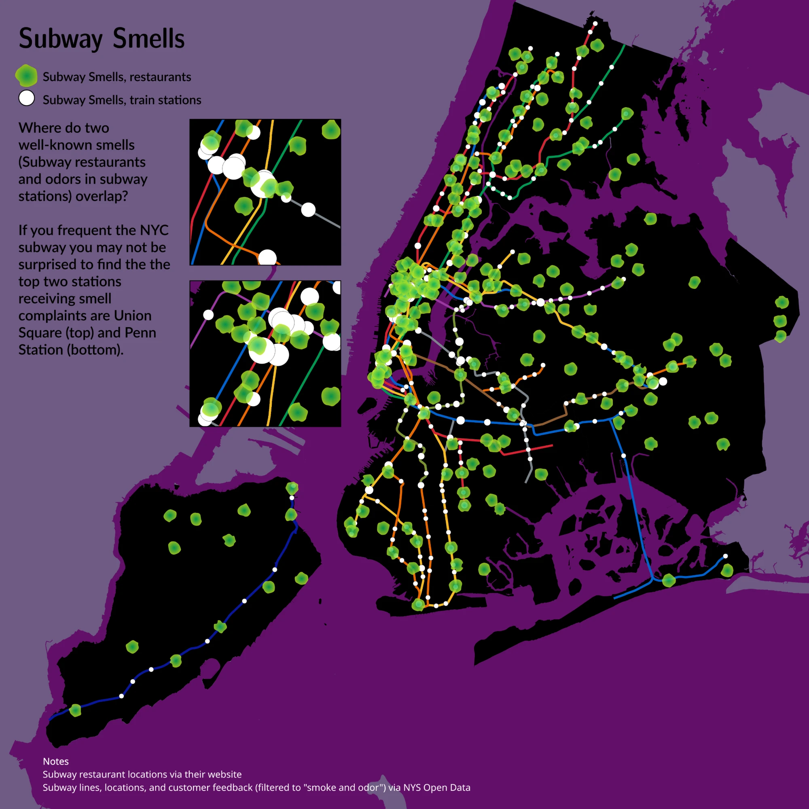

Where do two well-known New York smells overlap: Subway sandwich shops, and odors in subway stations? Riders who know the system may not be surprised that the two stations with the most smell complaints are Union Square and Penn Station, shown in the insets.
Subway restaurant locations from Subway’s website. Subway lines, stations and customer feedback (filtered to “smoke and odor”) from NYS Open Data. Select the map to open it at full size.